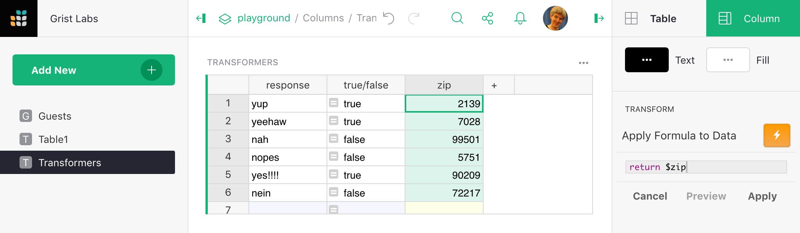

Spreadsheets are convenient tools for cleaning up data using formulas. For example, imagine you had zip codes that have lost leading zeros - you can easily reformat them with a quick formula:

We could now freeze the results and delete the original data if we don’t need it anymore.
If you know you’re going to throw away the original data like this, Grist offers column transformations as a faster way to systematically modify all cells of a column. Find the “Transform” section at the bottom of the column options side panel (see Columns for how to open this panel).

When you click the orange “lightning” button, Grist prompts you with a formula,
return $zip in this case. You can edit this formula to make some change to
the selected column. For example return $zip + 1 would add one to the zip code.
You can preview the effect your formula would have, and when you are happy, hit
“Apply”. In our case, where we want to add leading zeros, we’ll need to first
change our column type to be Text (assuming it is currently Integer - if it
Numeric convert to Integer first and then to Text to avoid decimal points).
Once done, we can use our formula for adding leading zeros:

When happy, press “Apply” to replace the cell values with their new versions.
Likewise, the response column could be transformed with the formula into true/false
values with $response[0] == 'y', and then set as a toggle column.